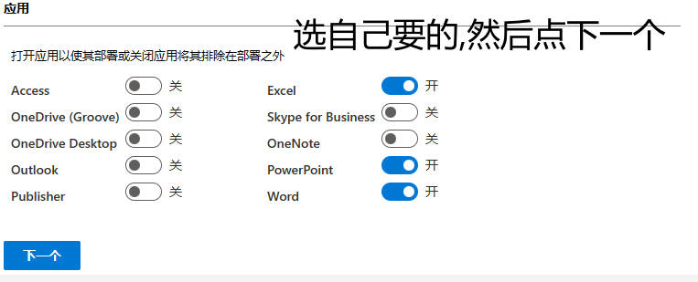
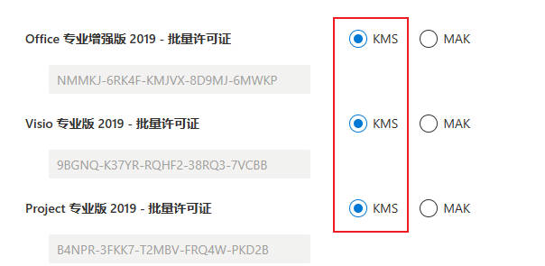

返回
一、
https://www.microsoft.com/en-us/download/details.aspx?id=49117
运行下载出来的程序 下载到单独的文件夹中 (文件夹路径有中文后续易报错
二、
https://config.office.com/deploymentsettings
产品和版本

语言
主要语言 -> 简体中文
授权和激活

其余不用更改
将下载的.xml文件放入 一步骤中的文件夹
三、
复制 一步骤中文件夹 的路径
用管理员打开cmd : 开始菜单 -> Windows 系统 -> 命令提示符 (也可以搜索 -> 右键 -> 更多 -> 管理员运行
"slmgr /skms kms.03k.org" (每行操作后都要回车
"slmgr /ato"
输入盘符 例: " E: "
"cd" ctrl + V 粘贴刚才复制的路径 例: "cd E:\office" 结果: E:\office>
"setup /download config.xml" 成功会有下一行出现(会比较久,0~60分钟) 如若时间过长:文件夹路径\Office 右键Data文件夹 -> 属性可查看大小 卡在1.86GB可关掉面板按上述操作重新打开即可 如若报错:检查是否有中文路径 且是否有管理员权限
"setup /configure config.xml" 会弹出页面安装(0~40分钟,这里时间完全按网速)
最后在开始菜单打开即可 未激活请重启